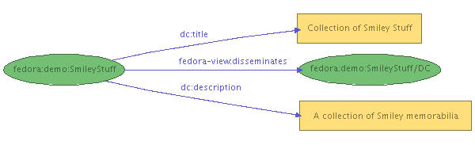

Introduction
The Resource Index is the Fedora module that provides the infrastructure for indexing relationships among objects and their components. Examples of relationships between digital objects include well-known management relationships such as the part-whole links between individual chapters and a book, and semantic relationships useful in digital library organization such as those expressed within the Functional Requirements for Bibliographic Records (FRBR).Fedora expresses relationships by defining a base relationship ontology [RELS-EXT] using RDFS and provides a slot in the digital object abstraction for RDF expression of relationships based on this ontology. Assertions from other ontologies may also be included along with the base Fedora relationships. All relationships are represented as a graph that can be queried using an RDF query language. The query interface to the Resource Index is exposed as a web service [risearch], [Fedora Relationships].
Implementation
The Fedora object model can be abstractly viewed as a directed graph, consisting of internal arcs that relate digital object nodes to their dissemination nodes and external arcs between digital objects. The Resource Index is a Fedora service that allows storage and query of this graph. The Resource Index is automatically updated whenever an object is added or modified.The Resource Index builds on the RDF primitives build within the semantic web community. Fedora supplies a base relationship ontology [RELS-EXT] (defining a core set of internal and external relationships) that can co-exist with domain-specific relationship ontologies from other namespaces. Each digital object's external relationships to other digital objects are expressing in RDF/XML within a reserved datastream in the respective object. A relationship graph over the digital objects in the repository can then be derived by merging the internal relationships implied by the Fedora object model with the external relationships explicitly stated in their relationship datastreams.
-
System Relationships & Properties
The Fedora base ontology describes such relations and properties as the behavior definition implemented, behavior mechanism used, creation date, state, and mime-type.
In the figure below, the graph (abbreviated for clarity) represents three objects in the repository.demo:SmileyStuffuses the behavior mechanismdemo:dualResImageCollection, which in turn implements the behavior definitiondemo:Collection.

Dublin Core statements, as shown in the figure below, are automatically extracted from an object's DC datastream and inserted into the Resource Index. datastream, as shown in the figure below:
 -
User-defined Relationships
The Resource Index will automatically index object-to-object relationships defined in the RELS-EXT datastream. Please consult Fedora Metadata for Object-to-Object Relationships for more information.
Configuration
Please note that many configuration changes require a full rebuild of the Resource Index to ensure consistency. For example, turning the Resource Index Module off and on again will result in an inconsistent state, as the Resource Index will know nothing about the digital objects created or modified while the module was not loaded. Similarly, enabling full-text indexing [Full-Text] after the repository has already been populated will only add new objects to the full-text model. In general, the only safe configuration changes to make on a running repository are limited to the performance-related pool, buffer and flush parameters. In all cases, configuration changes require a restart of the Fedora server before taking effect.The Resource Index is configured within two sections of fedora.fcfg, module and datastore.
-
Module Configuration
The Resource Index module is configured with fedora.fcfg
Here's an example of a Resource Index module configuration that uses Mulgara with delayed updates:
<module role="fedora.server.resourceIndex.ResourceIndex" class="fedora.server.resourceIndex.ResourceIndexModule"> <param name="level" value="1"/> <param name="datastore" value="localMulgaraTriplestore"/> <param name="syncUpdates" value="false"/> </module>
Here's another example, this time using MPTStore with immediate updates:<module role="fedora.server.resourceIndex.ResourceIndex" class="fedora.server.resourceIndex.ResourceIndexModule"> <param name="level" value="1"/> <param name="datastore" value="localPostgresMPTTriplestore"/> <param name="syncUpdates" value="true"/> </module>
An explanation of the parameters and their possible values:-
level - Sets the operating level of the Resource Index.
- 0 - Off: the Resource Index will not load at server startup.
- 1 - On: the Resource Index will index system properties, inter & intra-object relationships, and user-defined relationships.
-
datastore - The id of the datastore to use with the Resource
Index. The referenced datastore must assert a
connectorClassNameparameter with a valid Trippi Connector class. - syncUpdates - Whether to flush the triple buffer before returning from object modification operations. This defaults to false. Specifying this as true will ensure that RI queries immediately reflect the latest triples. Specifying false will not provide this guarantee, but can reduce roundtrip time for API-M operations (especially when using Mulgara).
-
level - Sets the operating level of the Resource Index.
-
Mulgara Datastore Configuration
The example datastore configuration below (with the path parameter modified for the installation environment) would provide a local Mulgara triplestore that buffers up to 20,000 triples in memory at a time or waits for 5 seconds of buffer inactivity before flushing them to disk. Because writing triples to disk is a relatively expensive operation, the buffer takes advantage of Mulgara's bulk update handler to ingest a mass of triples at a time. The performance gain is significant during a bulk ingest of objects. The size or inactivity interval of the buffer may be adjusted according to performance needs and physical memory capacity.
<datastore id="localMulgaraTriplestore"> <param name="connectorClassName" value="org.trippi.impl.mulgara.MulgaraConnector"/> <param name="remote" value="false"/> <param name="path" value="/opt/fedora/store/resourceIndex"/> <param name="serverName" value="fedora"/> <param name="modelName" value="ri"/> <param name="poolInitialSize" value="3"/> <param name="poolMaxGrowth" value="-1"/> <param name="readOnly" value="false"/> <param name="autoCreate" value="true"/> <param name="autoTextIndex" value="false"/> <param name="memoryBuffer" value="true"/> <param name="autoFlushDormantSeconds" value="5"/> <param name="autoFlushBufferSize" value="20000"/> <param name="bufferSafeCapacity" value="40000"/> <param name="bufferFlushBatchSize" value="20000"/> </datastore>
An explanation of the parameters and their possible values follows. Certain parameters require other parameters, as indicated in the hierarchy below. Optional parameters are also indicated below. As noted previously, many of these parameters, with the exception of the pool, buffer, and flush parameters, cannot be changed on a running repository without a full rebuild of the Resource Index.-
connectorClassName - The name of the Trippi Connector class used
to communicate with the triplestore. When using Mulgara, the value should be
as follows:
- org.trippi.impl.mulgara.MulgaraConnector
-
remote - Tells the connector to communicate with Mulgara in
remote or local mode.
-
true - If remote is true, the host parameter must be specified.
-
host - The hostname where Mulgara is running. The
hostname can be specified as an argument when starting
Mulgara, e.g.
java -jar mulgara-2.0.0.jar -k localhost - port - The rmi port Mulgara is running on (default is 1099).
-
host - The hostname where Mulgara is running. The
hostname can be specified as an argument when starting
Mulgara, e.g.
-
false - If remote is false, path parameter must be specified.
- path - The local path to the main triplestore directory.
-
true - If remote is true, the host parameter must be specified.
-
serverName - The server name for rmi binding.
When configuring a remote instance of Mulgara, the server name
defaults to "server1". To change this default, use the "-s"
argument, e.g.
java -jar mulgara-2.0.0.jar -s fedora - modelName - The name of the model to use.
- poolInitialSize - The initial size of the session pool used for queries. Note: A value of 0 will cause the Resource Index to operate in synchronized mode: concurrent read/write requests are put in a queue and handled in FIFO order; this will severely impair performance and is only intended for debugging.
- poolMaxGrowth - Maximum number of additional sessions the pool may add. If specified as -1, no limit will be placed on pool growth.
- poolSpareSessions - The number of spare sessions to proactively make available. If unspecified, this defaults to 0, which means that additional sessions will only be created as needed. Note that if poolMaxGrowth is 0, the value of this parameter is inconsequential.
-
readOnly - Whether the triplestore should be read-only.
Most Fedora repositories will set this to false.
- true - No additional parameters need to be set if readOnly is true.
-
false - The following parameters must also be set if readOnly is false.
-
autocreate - Whether to create the model if it doesn't already exist.
At startup, the model will be automatically created. In addition, an
XML schema datatyped model named "xsd" will also be automatically created.
- true
- false
-
autoTextIndex - Whether to propagate adds/deletes to a full-text
[Full-Text] model automatically. While
a very useful feature, enabling full-text indexing adds significantly
to object ingest times. If true, the text model will be named
modelName-fullText. Note that if this is true and autoCreate is true,
the text model will also be created if it doesn't already exist.
- true
- false
-
memoryBuffer - Whether to use a memory buffer or a database buffer
for write operations. The buffer is where triples are stored before they're
actually written. Normally, a memory buffer will be sufficient. However,
in certain server environments, a database buffer is the better option,
offering higher capacity and persistence.
- true
-
false
-
dbDriver - The JDBC driver class name. This must be in the classpath.
- com.mysql.jdbc.Driver
- com.mckoi.JDBCDriver
- oracle.jdbc.driver.OracleDriver
-
dbURL - The JDBC URL for the database. Examples: For MySQL,
jdbc:mysql://localhost/mydbwould use the local database named mydb. For McKoi,jdbc:mckoi://localhost:9157/would use the local database at port 9157. For oracle,jdbc:oracle:thin:@localhost:1521:mydbwould use the thin driver to connect to the local database named mydb at port 1521. - dbUsername - The database username.
- dbPassword - The password for the db user.
-
dbTableName - The table for buffered triple updates. This table
must already exist with the following five columns:
num(a large numeric type),action(char(1)),subject,predicate, andobject(all large varchar or text types).
-
dbDriver - The JDBC driver class name. This must be in the classpath.
- autoFlushDormantSeconds - Seconds of buffer inactivity that will trigger an auto-flush. If this threshold is reached, flushing will occur in the background, during which time the buffer is still available for writing.
- autoFlushBufferSize - The size at which the buffer should be auto-flushed. If this threshold is reached, flushing will occur in the background, during which time the buffer is still available for writing.
- bufferSafeCapacity - The maximum size the buffer can reach before being forcibly flushed. If this threshold is reached, flushing will occur in the foreground and the buffer will be locked for writing until it is finished. This should be larger than autoFlushBufferSize.
- bufferFlushBatchSize - The number of updates to send to the triplestore at a time. This should be the same size as, or smaller than autoFlushBufferSize.
-
autocreate - Whether to create the model if it doesn't already exist.
At startup, the model will be automatically created. In addition, an
XML schema datatyped model named "xsd" will also be automatically created.
-
connectorClassName - The name of the Trippi Connector class used
to communicate with the triplestore. When using Mulgara, the value should be
as follows:
-
MPTStore Datastore Configuration
The example datastore configuration below would provide a local MPTStore triplestore backed by Postgres.
<datastore id="localPostgresMPTTriplestore"> <comment> Example local MPTStore backed by Postgres. To use this triplestore for the Resource Index: 1) In fedora.fcfg, change the "datastore" parameter of the ResourceIndex module to localPostgresMPTTriplestore. 2) Login to your Postgres server as an administrative user and run the following commands: CREATE ROLE "fedoraAdmin" LOGIN PASSWORD 'fedoraAdmin' NOINHERIT CREATEDB VALID UNTIL 'infinity'; CREATE DATABASE "riTriples" WITH ENCODING='SQL_ASCII' OWNER="fedoraAdmin"; 3) Make sure you can login to your Postgres server as fedoraAdmin. 4) Download the appropriate Postgres JDBC 3 driver from http://jdbc.postgresql.org/download.html and make sure it's accessible to your servlet container. If you're running Tomcat, putting it in common/lib/ will work. </comment> <param name="connectorClassName" value="org.trippi.impl.mpt.MPTConnector"/> <param name="ddlGenerator" value="org.nsdl.mptstore.impl.postgres.PostgresDDLGenerator"/> <param name="jdbcDriver" value="org.postgresql.Driver"/> <param name="jdbcURL" value="jdbc:postgresql://localhost/riTriples"/> <param name="username" value="fedoraAdmin"/> <param name="password" value="fedoraAdmin"/> <param name="poolInitialSize" value="3"/> <param name="poolMaxSize" value="10"/> <param name="backslashIsEscape" value="true"/> <param name="fetchSize" value="1000"/> <param name="autoFlushDormantSeconds" value="5"/> <param name="autoFlushBufferSize" value="1000"/> <param name="bufferFlushBatchSize" value="1000"/> <param name="bufferSafeCapacity" value="2000"/> </datastore>
Search Interface
The Resource Index Search interface is exposed in a REST architectural style, providing a stateless query interface that accepts queries by value or by reference [Fedora Relationships].The query interface to the Resource Index currently supports two RDF query languages, iTQL (Mulgara-only), and SPO (Mulgara and MPTStore). Support for SPARQL is planned for a future release.
Please consult the Resource Index Search documentation for more information.
Resource Index Demo
Demonstration objects that utilize the Resource Index are included in the Fedora distribution. Please see the Demo documentation for more information.References
- [Fedora Relationships]
- Fedora: An Architecture for Complex Objects and their Relationships, Carl Lagoze, Sandy Payette, Edwin Shin, and Chris Wilper, 2004.
- [Full-Text]
- Mulgara Full-Text Models
- [RELS-EXT]
- Fedora Relationship Ontology
- [risearch]
- Fedora Resource Index Search Service